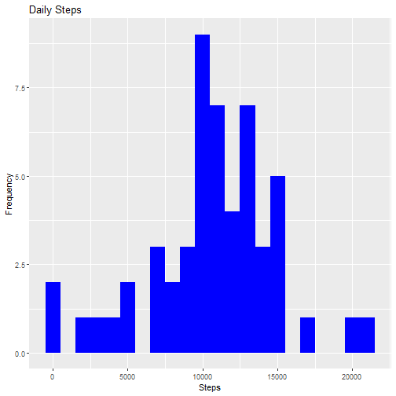

It is now possible to collect a large amount of data about personal movement using activity monitoring devices such as a Fitbit, Nike Fuelband, or Jawbone Up. These type of devices are part of the "quantified self" movement -- a group of enthusiasts who take measurements about themselves regularly to improve their health, to find patterns in their behavior, or because they are tech geeks. But these data remain under-utilized both because the raw data are hard to obtain and there is a lack of statistical methods and software for processing and interpreting the data.
This assignment makes use of data from a personal activity monitoring device. This device collects data at 5 minute intervals through out the day. The data consists of two months of data from an anonymous individual collected during the months of October and November, 2012 and include the number of steps taken in 5 minute intervals each day.
The data for this assignment can be downloaded from the course web site:
The variables included in this dataset are:
steps: Number of steps taking in a 5-minute interval (missing
values are coded as NA)
date: The date on which the measurement was taken in YYYY-MM-DD format
interval: Identifier for the 5-minute interval in which measurement was taken
The dataset is stored in a comma-separated-value (CSV) file and there are a total of 17,568 observations in this dataset.
Checks to see if the data is downloaded and then downloads when applicable Once downloaded it will unzip the file to obtain the csv
library(data.table)
library(ggplot2)
file1.name <- "./activity.csv"
download.url <- "https://d396qusza40orc.cloudfront.net/repdata%2Fdata%2Factivity.zip"
zip.name <- "./data.zip"
if (!file.exists(file1.name)) {
download.file(download.url, destfile = zip.name)
unzip(zip.name)
file.remove(zip.name)
}
Once we have the CSV we can read it then save it as a Data.Table
data <- read.csv("activity.csv", header = TRUE, sep = ",", na.strings = "NA")
setDT(data)
1.) Calculate the total number of steps taken per day (along with a sample display)
Total_Steps <- data[, c(lapply(.SD, sum, na.rm = FALSE)), .SDcols = c("steps"), by = .(date)]
head(Total_Steps, 5)
## date steps
## 1: 2012-10-01 NA
## 2: 2012-10-02 126
## 3: 2012-10-03 11352
## 4: 2012-10-04 12116
## 5: 2012-10-05 13294
2) Make a histogram of the total number of steps taken each day.
ggplot(Total_Steps, aes(x = steps)) +
geom_histogram(fill = "blue", binwidth = 1000) +
labs(title = "Daily Steps", x = "Steps", y = "Frequency")
## Warning: Removed 8 rows containing non-finite values (stat_bin).

Total_Steps[, .(Mean_Steps = mean(steps, na.rm = TRUE), Median_Steps = median(steps, na.rm = TRUE))]
## Mean_Steps Median_Steps
## 1: 10766.19 10765
AveragePatternDT <- data[, c(lapply(.SD, mean, na.rm = TRUE)), .SDcols = c("steps"), by = .(interval)]
ggplot(AveragePatternDT, aes(x = interval , y = steps)) + geom_line(color="blue", size=1) + labs(title = "Avg. Daily Steps", x = "Interval", y = "Avg. Steps per day")
AveragePatternDT[steps == max(steps), .(max_interval = interval)]
## max_interval
## 1: 835
{r echo=TRUE}
data[is.na(steps), .N ]
`# Filling in missing values with median of dataset.
data[is.na(steps), "steps"] <- data[, c(lapply(.SD, median, na.rm = TRUE)), .SDcols = c("steps")]
data.table::fwrite(x = data, file = "./tidyData.csv", quote = FALSE)
# total number of steps taken per day
Total_Steps <- data[, c(lapply(.SD, sum)), .SDcols = c("steps"), by = .(date)]
# mean and median total number of steps taken per day
Total_Steps[, .(Mean_Steps = mean(steps), Median_Steps = median(steps))]
## Mean_Steps Median_Steps
## 1: 9354.23 10395
ggplot(Total_Steps, aes(x = steps)) + geom_histogram(fill = "blue", binwidth = 1000) + labs(title = "Steps per day", x = "Steps", y = "Frequency")
 Yes the values differ - they are noticably smaller thus filling in the missing data vaalues has lowered the initial estimates.
Yes the values differ - they are noticably smaller thus filling in the missing data vaalues has lowered the initial estimates.
# reading the CSV again so that the estimated values dont affect the outcome
data <- read.csv("activity.csv", header = TRUE, sep = ",", na.strings = "NA")
setDT(data)
data[, date := as.POSIXct(date, format = "%Y-%m-%d")]
data[, `Day of Week`:= weekdays(x = date)]
data[grepl(pattern = "Monday|Tuesday|Wednesday|Thursday|Friday", x = `Day of Week`), "weekday or weekend"] <- "weekday"
data[grepl(pattern = "Saturday|Sunday", x = `Day of Week`), "weekday or weekend"] <- "weekend"
data[, `weekday or weekend` := as.factor(`weekday or weekend`)]
head(data, 5)
## steps date interval Day of Week weekday or weekend
## 1: NA 2012-10-01 0 Monday weekday
## 2: NA 2012-10-01 5 Monday weekday
## 3: NA 2012-10-01 10 Monday weekday
## 4: NA 2012-10-01 15 Monday weekday
## 5: NA 2012-10-01 20 Monday weekday
data[is.na(steps), "steps"] <- data[, c(lapply(.SD, median, na.rm = TRUE)), .SDcols = c("steps")]
AveragePatternDT <- data[, c(lapply(.SD, mean, na.rm = TRUE)), .SDcols = c("steps"), by = .(interval, `weekday or weekend`)]
ggplot(AveragePatternDT , aes(x = interval , y = steps, color=`weekday or weekend`)) + geom_line() + labs(title = "Avg. Daily Steps by Weektype", x = "Interval", y = "No. of Steps") + facet_wrap(~`weekday or weekend` , ncol = 1, nrow=2)